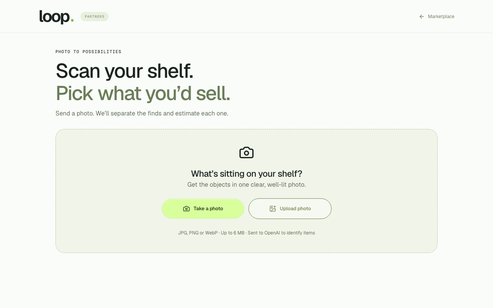

GOOD PROJECTS START WITH GOOD THINKING
Has anybody already built a shop you can just talk to?
Try an idea
Backed by product leaders in e-commerce fintech B2B SaaS

HOW IT WORKS
PROJECTS
All projects
Hire the right expertise, not just anyone who can build.
 5 screens · 1 video
5 screens · 1 videoCommerce
Voice-first e-commerce shopping
Search, ask about products and shortlist them in one continuous voice conversation.
Built by Revealed after you reach out
 1 video
1 videoInvestment management
Agents in investment management
A video walkthrough of an investment platform with agents at its core.
Built by Revealed after you reach out
 1 screen · 1 video
1 screen · 1 videoAnalytics
Voice-based analytics: an analyst on the call
Ask a question out loud and the evidence appears while the conversation is still happening.
Built by Revealed after you reach out
 4 screens
4 screensAnalytics
Proactive analytics: insights without asking
Benchmarks, data-hygiene checks and a daily brief instead of another dashboard.
Built by Revealed after you reach out

3 screensCommerce
Voice-driven seller onboarding: scan your shelf, say what to sell
One photo of a shelf becomes item cards with prices and demand; the seller picks what to sell by voice.
Built by Revealed after you reach out
The most valuable part of a project
isn’t just what got built.
It’s why someone built it that way.